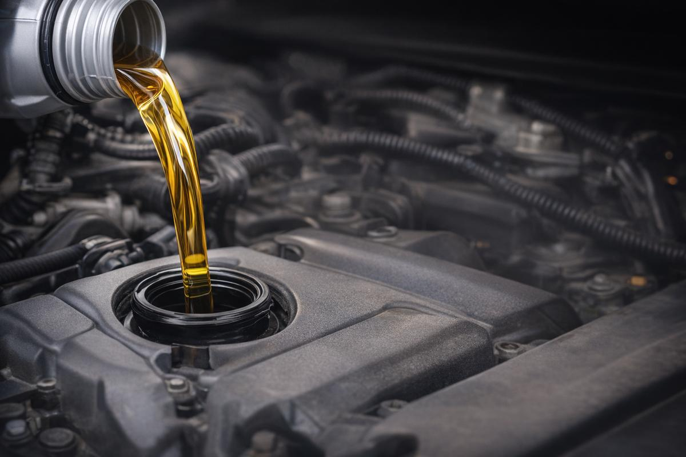

La vidange, c'est le geste d'entretien le plus simple et le plus important pour votre moteur. Chez DMT AUTOGROUP à Zaventem, on utilise de l'huile de qualité adaptée à votre véhicule, on remplace les filtres, et c'est fait en moins d'une heure. Pas besoin de rendez-vous — passez quand ça vous arrange. De olieverversing is het eenvoudigste en belangrijkste onderhoud voor uw motor. Bij DMT AUTOGROUP in Zaventem gebruiken we kwaliteitsolie aangepast aan uw voertuig, vervangen we de filters, en het is klaar in minder dan een uur.
L'huile moteur se dégrade avec le temps et les kilomètres. Si vous attendez trop longtemps, elle ne lubrifie plus correctement et votre moteur s'use prématurément. Chez DMT AUTOGROUP, on vidange votre huile moteur et on la remplace par une huile de qualité — 5W30, 5W40, 0W20, selon ce que demande votre constructeur. On travaille sur toutes les marques, du petit diesel au gros moteur essence. Pendant que votre voiture est sur le pont, on peut aussi vérifier l'état de vos pneus et vous conseiller si un remplacement s'impose. Les habitants de Zaventem, Diegem et Nossegem nous font confiance pour ça depuis notre ouverture. Motorolie degradeert na verloop van tijd en kilometers. Bij DMT AUTOGROUP verversen we uw motorolie en vervangen we deze door kwaliteitsolie — 5W30, 5W40, 0W20, volgens de specificaties van uw constructeur. Terwijl uw auto op de brug staat, controleren we ook graag de staat van uw banden en adviseren we u als vervanging nodig is.


Le filtre à huile, on le change à chaque vidange — c'est automatique chez nous. Un filtre bouché laisse passer des impuretés dans le moteur et ça fait des dégâts. C'est un petit investissement qui évite de gros frais de réparation moteur plus tard. Het oliefilter vervangen we bij elke olieverversing — dat is automatisch bij ons. Een verstopt filter laat onzuiverheden door in de motor en dat veroorzaakt schade.
Le filtre habitacle, c'est ce qui filtre l'air que vous respirez dans votre voiture. Pollen, poussière, gaz d'échappement — surtout si vous roulez souvent sur la E40 ou dans le trafic autour de l'aéroport de Zaventem, ce filtre se bouche vite. On le remplace en quelques minutes et vous sentez la différence immédiatement. C'est aussi bon à faire avant de passer votre contrôle technique. Het interieurfilter filtert de lucht die u inademt in uw auto. Pollen, stof, uitlaatgassen — vooral als u vaak rijdt op de E40 of in het verkeer rond de luchthaven van Zaventem, raakt dit filter snel verstopt.
Le filtre à carburant protège vos injecteurs et votre pompe à injection. Sur les diesels, c'est un entretien à ne pas négliger — un filtre bouché peut causer des pertes de puissance, des ratés, et même endommager le circuit d'injection qui coûte cher à réparer. Chez DMT AUTOGROUP, on vérifie l'état du filtre à carburant à chaque entretien et on le remplace quand il faut. Si votre voiture a aussi des rayures ou des éclats de peinture, profitez de votre visite pour demander un devis carrosserie et peinture. Het brandstoffilter beschermt uw injectoren en inspuitpomp. Bij diesels is dit onderhoud dat je niet mag verwaarlozen — een verstopt filter kan vermogensverlies, haperingen en zelfs schade aan het injectiesysteem veroorzaken. Heeft uw auto ook krassen of lakschade? Profiteer van uw bezoek om een offerte te vragen voor carrosserie en lakwerk.

Lundi — Vendredi · 08:30 — 18:00
Mechelsesteenweg 270, 1933 ZaventemMaandag — Vrijdag · 08:30 — 18:00
Mechelsesteenweg 270, 1933 Zaventem